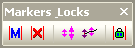
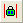

Die Symbolleiste Markierungen und Schlösser
- 
Die Symbolleiste Markierungen & Schlösser bietet schnelle Einstellmöglichkeiten der Datennmarkierungen und Schlösser. Sie können Datenmarkierungen und Schlosspositionen hinzufügen oder löschen und die Größe der Makierungen und Schlosspositionen ändern.
|
Fügt Datenmarkierungen mit Hilfe des aktuellen X-Skalenbereich hinzu.
|
 |
Löscht alle Datenmarkierungen auf dem Diagramm.
|
|
Wechselt die Markierungsgröße.
|
 |
Wechselt den Status Verbergen/Zeigen der Makierungen.
|
|  |
Wechselt die Schlosspositionen auf dem Diagramm.
|